Monica S. Flores


Facebook monicasflores1
Twitter @monicasflores
LinkedIn monicaflores
Wordpress monicasflores
Resume Monica S. Flores
300-Character Bio
Monica S. Flores (@monicasflores) builds digital products to support a socially just, environmentally sustainable, equitable society. As co-founder and advisor, she works with communities, dreamers, & doers who are #makingapositivedifference.
Short Biography
Founder and advisor building digital products at the intersection of social justice, technology, education, & community
Monica is a partner at 10K Group and staffs Green America, a national non-profit focused on economic justice through environmental sustainability. She consults with U.S.-based and international groups on digital products that build community, foster a feeling of connectedness, and aspire to make the world a better place. Author of the A Successful Woman’s Handbook series and frequent speaker and presenter, she is passionate about women’s leadership, technology, and how to make a positive difference.
Full Biography
Monica S. Flores brings over 20 years of experience as a web developer, information architect, engineering manager, chief technology officer, and advisor to public agencies, membership organizations, and progressive groups. Clients include Green America, Ashoka Changemakers, Princeton University, the U.S. Department of State, and 240+ international and national websites produced through her consulting practice.
Because of her interest in building communities online, she is frequently asked to advise emerging and startup groups on pilot projects. She coaches and consults leadership teams through strategic planning, metrics definition, and project management. She trains individuals and organizations on how to write RFPs, identify functional specifications, think about database architecture, define content types, document user permissions, determine reporting needs, and plan their growth.
Author of the A Successful Woman’s Handbook series and frequent speaker and presenter, she is passionate about entrepreneurship, leadership, innovation, education, and technology, with a focus on social justice, environmental sustinability, and support for women, children, and families.
She founded and sold A Successful Woman, a woman-supporting membership organization, and co-founded Gramercy & Co, a luxury home accessories and fashion e-tailer. She began her consulting practice in 2004.
She is currently working on the following projects:
- #STEMDaisies – where women in science, technology, engineering, and math film a brief video of their workspace, lab, or office, to share a normal STEM work environment with girls at stemdaisies.com
- ~ #femalefoundersleadtheway – a membership group that collects and shares stories of female founders at femalefounders.info
- ~ #makingapositivedifference – a community to support the doers and dreamers who are committed to making a positive difference possdiff.com
- ~ #womensocent – Women in Social Enterprise – stories of women in social enterprise at bit.ly/womensocent
Monica uses her skills to #makeapositivedifference by building community, fostering connectedness, and advancing technology to create a better world.
Inspirational downloads: http://tinyurl.com/inspirationalslides
Send a SMS to her "mebot" #213–261–0305
Videos
On Why Being a Role Model is So Important for Women in Tech
What Career Opportunities Exist for Girls Interested in Tech?
What’s Most Fulfilling About a Career in Tech?
My Best Advice for Girls Considering a Career in Tech
What Motivated me to Launch a Tech Career?
Past Events
2016 STEEAMnista Summit 2016 - NYC
Panelist at event focused on increasing the participation, visibility, leadership, and celebrating the achievements of women across S.T.E.A.M. (Science, Technology, Engineering, Arts, Math) + Entrepreneurship + Makers.
This is what all panels should look like!! #STEEAMnista #womenintech pic.twitter.com/zJZAsO5X0w
— Amanda Zamurs (@azamurs) November 5, 2016


 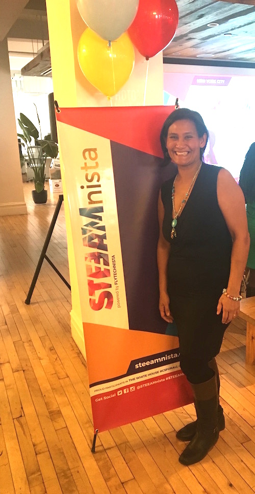
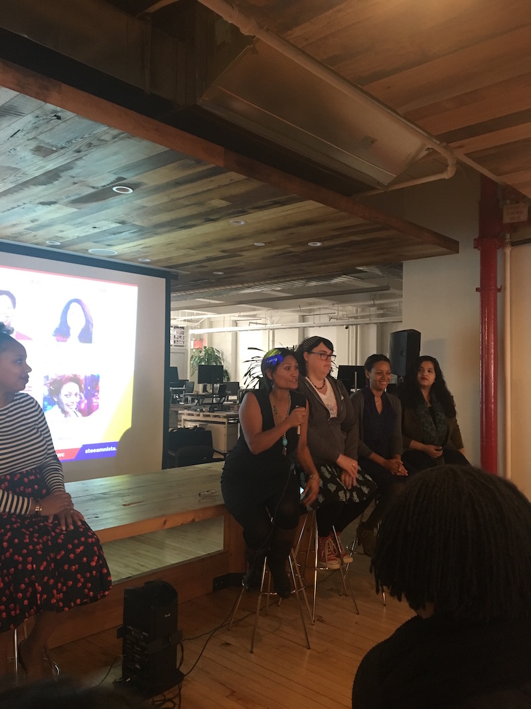
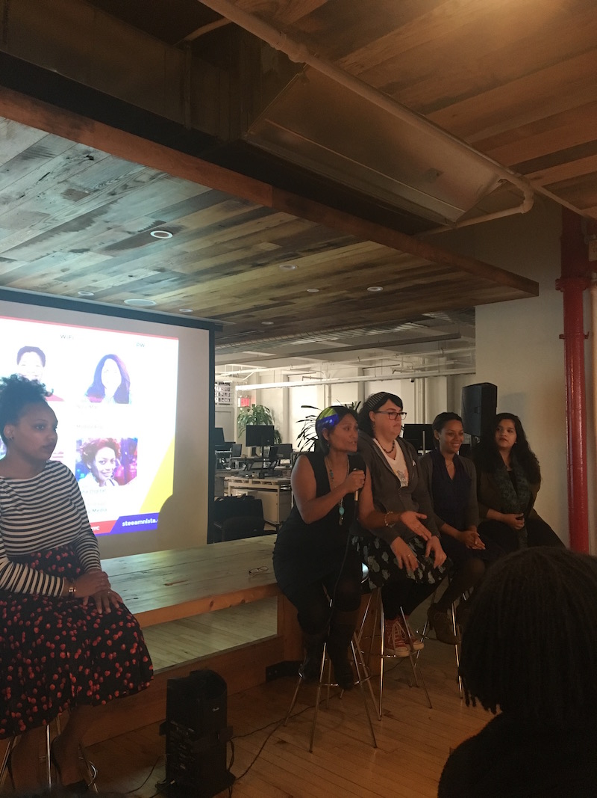
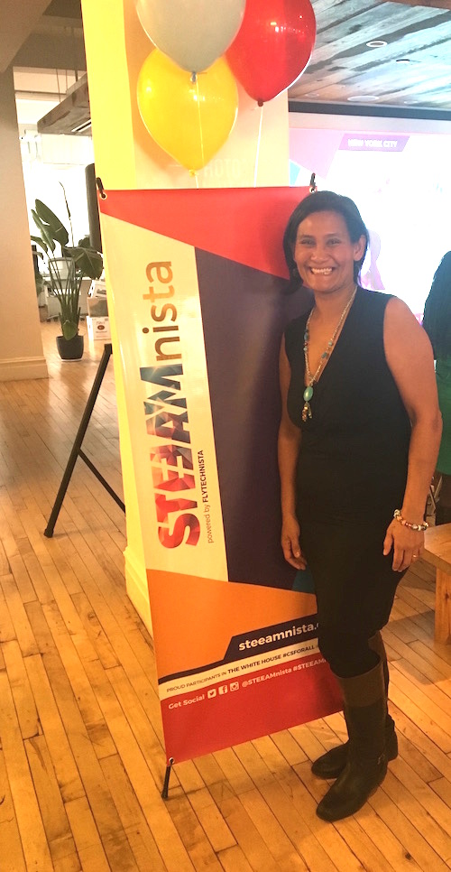
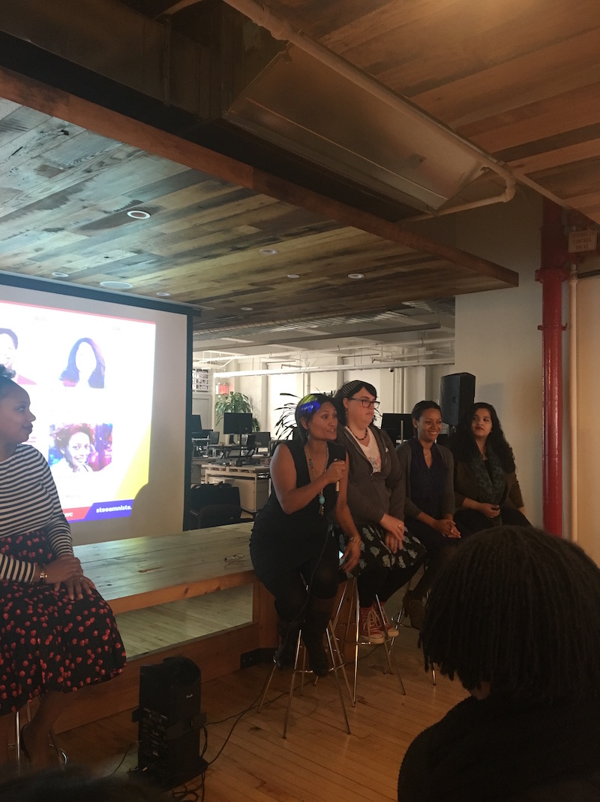
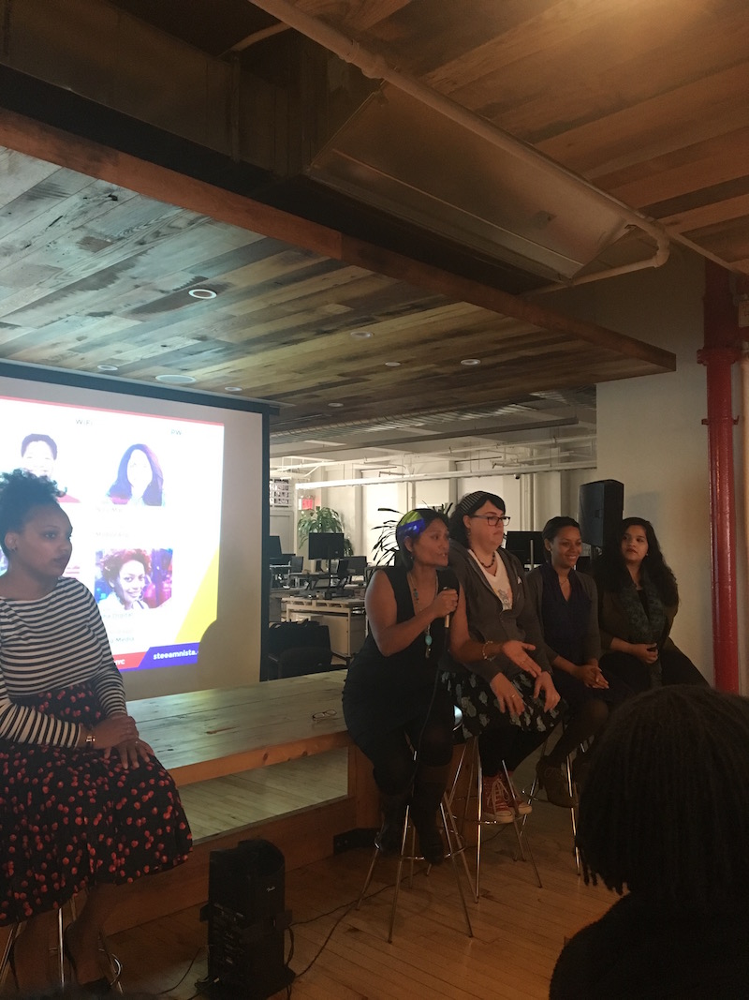
Great time at @STEEAMnista with these wonderful #wocintech! #diversityintech ❤️️⭐️ pic.twitter.com/tvrc3z2GtT
— Jessica Santana (@JessWorldwide) November 5, 2016
2016 DC Startup Weekend
Served as mentor for this hackathon focused on social good.
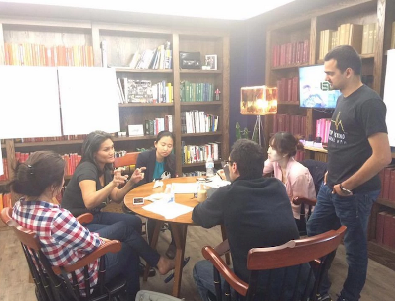 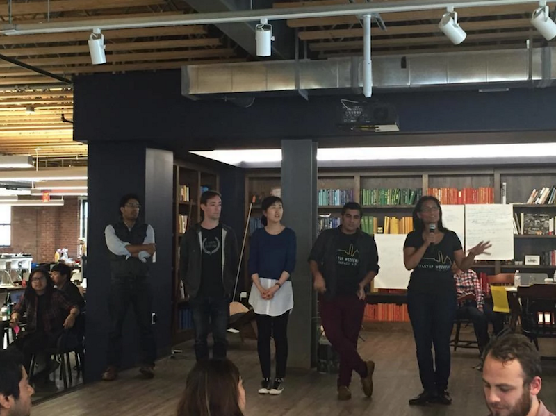2016 Net2DC
Presentation on "Everyone can be a Changemaker" at this gathering of non-profit professionals.
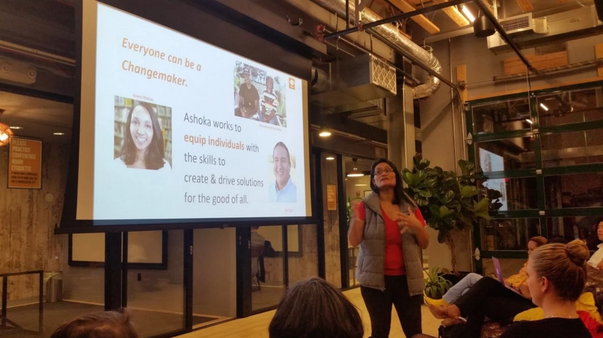2015 DC Web Women Speaker Series
I am writing to say a huge thank you for being part of the first DCWW Entrepreneurship series event. Your presence and presentation last night were simply amazing.
– Ruxi Giura
2015 Women in Tech Summit "Inspiring Women to Take a Chance"
Speaker Panel “Women Helping Women” in Philadelphia, PA
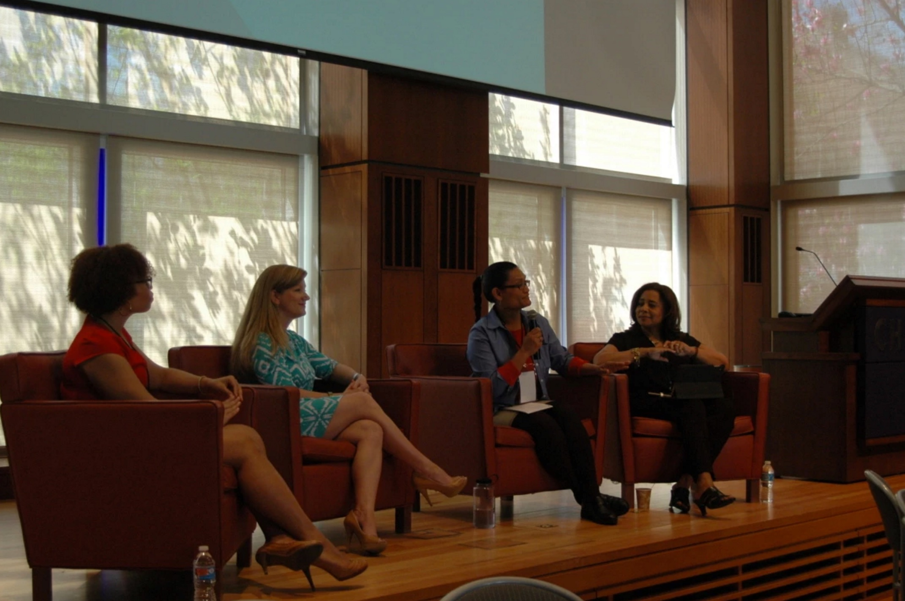 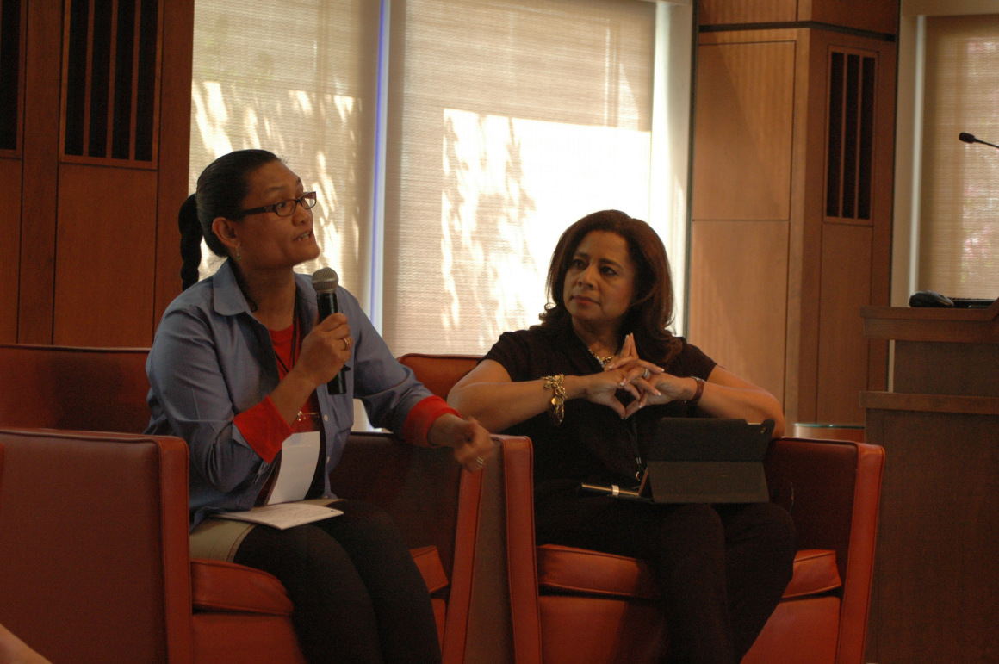THANK YOU so much for all your hard work you put into the Philly Women In Tech Summit! Your perspective added so much value to the panel. You ladies were AMAZING! The work that you do to help encourage women and young girls is incredible and I appreciate you sharing your journey. Without you couldn’t have pulled the off. It was such a pleasure working with you and I hope to keep in touch. I’d love to see you again at next year’s conference!
– Ashley Turner
Presentations
Five Tips to Increase Our Leadership Capacity
Overview: Women deserve greater opportunities for financing, mentorship, and advancement – we consistently seek more responsibility (and better pay), and we simultaneously navigate the path that leads to leadership opportunities. Learn five specific ways to increase demand for your expertise by “putting yourself out there”, giving yourself a chance to #failforward, facilitating professional development within your organization, operating around deliverables/results, and mentoring the next generation. link to presentation
Learning to Fail Forward: Embracing Failure on your Journey to Success
Women with skills, enthusiasm, and determination face a wide-open future. Many of us learn fortitude and flexibility by starting, growing, scaling, or in many cases, failing in our new venture. We’ll review six lessons in the entrepreneurial journey that help you embrace change, learn from past mistakes, and move forward in your next opportunity. link to presentation
Ten Tips to Travel the World
Use these tips to plan your journey of discovery. Voyage into the world with effective equipment, a positive attitude, and this roadmaps to know who you are, where you are going, and how you will get to where you want to be. link to presentation